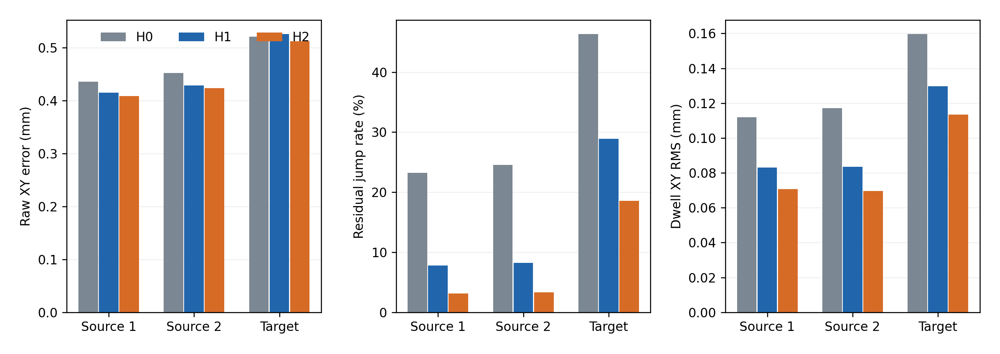
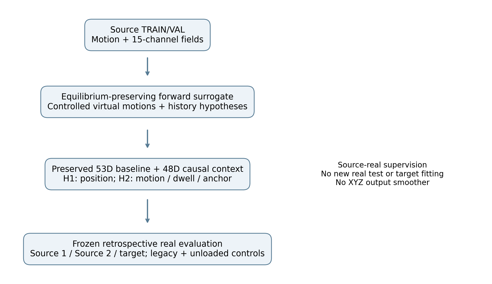
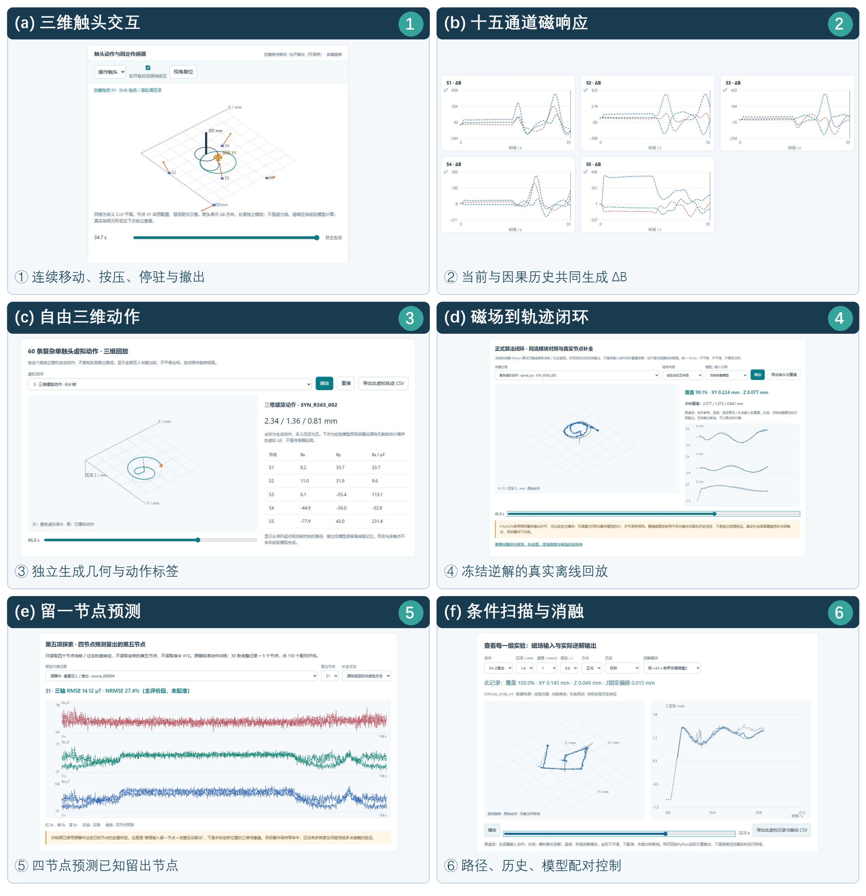

最终两候选均已完整平台期训练，6/6有限回放及独立统计核验通过。源器件两批未进入候选拟合的新复杂轨迹，在不新增XYZ输出平滑的条件下同时改善定位与稳定性。目标器件主要支持稳定性迁移；不宣称所有模型、器件或旧能力均提升。
H0：已有充分训练的完整因果基线；H1：新增多尺度历史＋真实位置监督；H2：相同输入/容量/数据再加运动增量、可靠停驻及静态锚点约束。基线本来已有历史，新增的是48维当前特征与因果EMA之差；不是输出坐标平均，也不是虚拟权重直接迁移。EMA输入处理明确保留。
每单元H0 / H1 / H2；每批12整Trial等权。原始定位保留不平移；去平移仅事后形状诊断。跳变采用共同有效相邻帧XY残差增量>0.2mm。停驻采用三模型共同有效段。
| 批次 | 原始XY mm | 去固定平移XY mm | 残差跳变率 % | 停驻XY RMS mm |
|---|---|---|---|---|
| 源器件批次1 | 0.436 / 0.415 / 0.408 | 0.215 / 0.190 / 0.195 | 23.23 / 7.77 / 3.13 | 0.112 / 0.083 / 0.071 |
| 源器件批次2 | 0.452 / 0.429 / 0.424 | 0.224 / 0.196 / 0.204 | 24.56 / 8.21 / 3.31 | 0.117 / 0.083 / 0.070 |
| 目标器件 | 0.521 / 0.526 / 0.512 | 0.478 / 0.488 / 0.484 | 46.32 / 28.87 / 18.54 | 0.160 / 0.130 / 0.113 |
H2源侧原始XY下降6.36% / 6.29%，跳变下降86.52% / 86.51%，停驻波动下降36.80% / 40.63%；目标跳变下降59.99%，波动下降28.92%。目标原始XY略降0.0086mm、去偏移XY略增0.0061mm，描述性精度区间跨零。两候选各自36/36减少跳变和停驻波动。
旧纯Z/目标圆部分退化；覆盖、零输出/失败、原始XYZ及全部控制均保留。只有单优化种子、两个器件及六个非随机几何族；这是回顾性冻结真实回放，不是首次前瞻盲测。命令/估计到达参考不等同光学接触真值。反转判据无合格事件，延迟不可估计而非零。



三轴加载平台、五个MLX90393节点、原始磁场与指令/基线时间流。实物结构和运行现场见既有论文仓库media。界面节点矢量不是磁力线，经验响应不是已验真的完整有限元数字孪生。
中文修订全文，11页 · English revised manuscript, 13 pages · 投稿定位评估（官方范围） · 完整144条件/9汇总/统计 · 源码与权重溯源 · 旧稿的25页视觉检查；修订稿检查记录见仓库paper目录
GitHub Pages 运行静态交互前端、经验正向响应和已保存结果；Python 训练、完整因果回放、有限元及硬件不在 Pages 执行。网页代码按 MIT 许可，论文和图表按 CC BY 4.0 许可；未经核准的原始 Trial 元数据不在本次公开范围内。